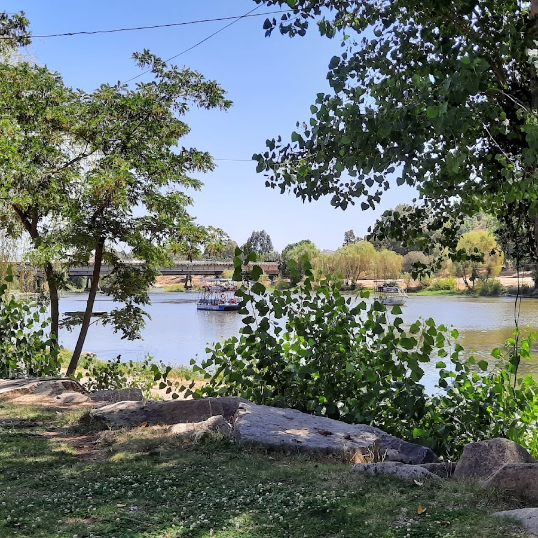
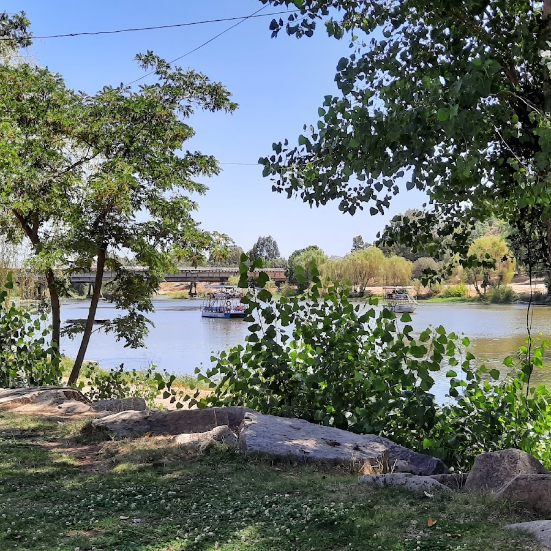
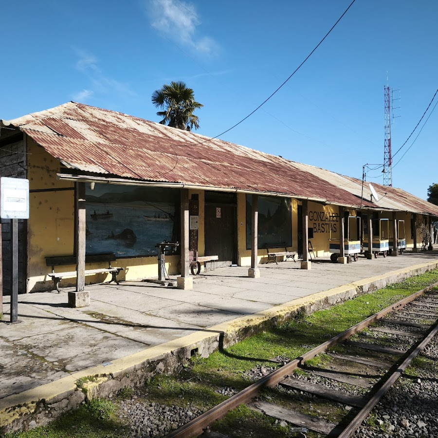
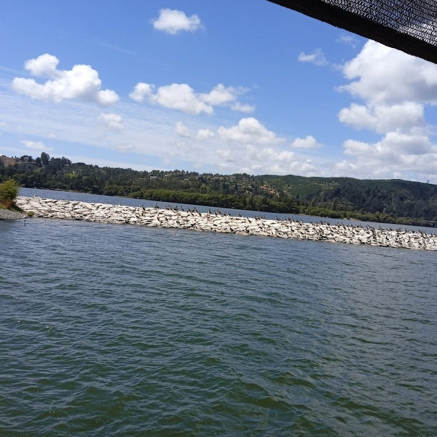
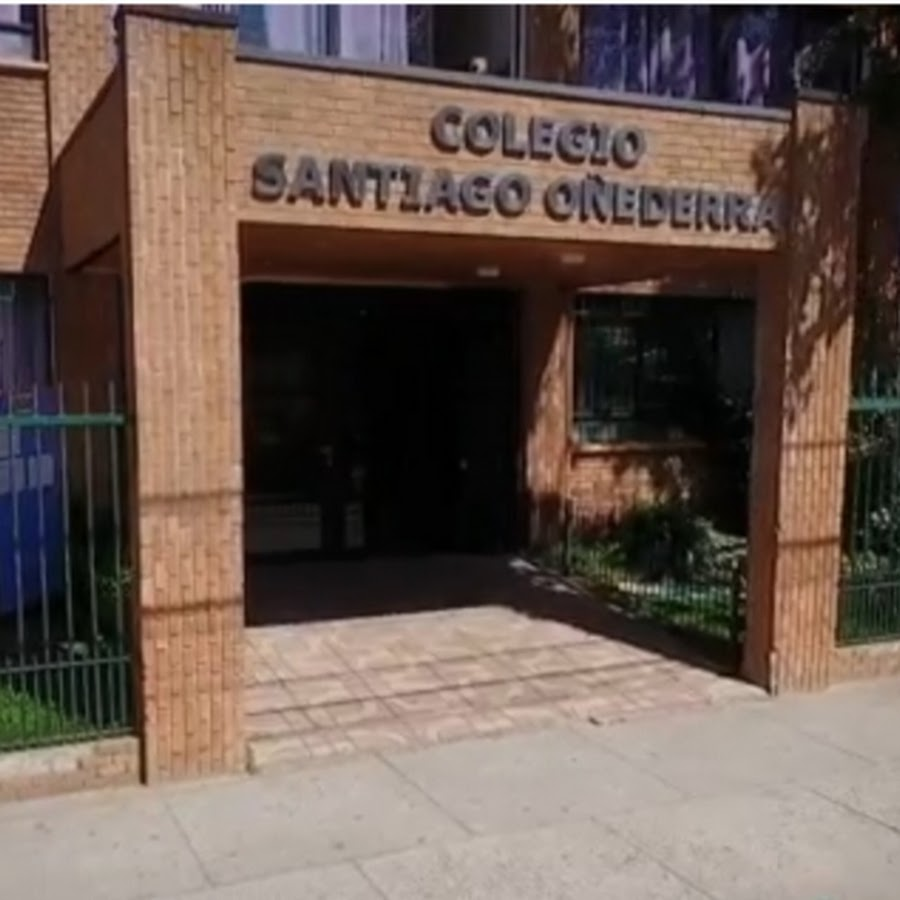

Largada — Balneario Río Claro
Sector Norte — Club Municipal de Canotaje.
Fechas oficiales: 01 y 02 de noviembre de 2025. Este 2025 celebramos 47 años de la Regata del Maule.
| Actividad | Hora | Detalle |
|---|---|---|
| Acreditación | 08:30–10:00 | Entrega de kit y control de participantes |
| Reunión técnica | 10:00 | Detalles del recorrido y logística |
| Inicio embarque exhibición | 10:40 | Organización en zona de partida |
| Largada exhibición — menores + Bote Dragón | 11:00 | Recorrido 3 km |
| Largada exhibición — SUP | 11:02 | Recorrido 3 km |
| Embarque Regata oficial | Tras exhibición | Ingreso por tandas |
| Largada Regata oficial | 12:00 | Tramo Talca → González Bastías |
| Colación | Durante/pos bajada | Para participantes |
| Almuerzo | Al llegar | Restorán Estación González Bastías |
| Actividad | Hora | Detalle |
|---|---|---|
| Largada Regata | 08:00 | Tramo González Bastías → Constitución |
| Exhibición en Constitución | ~12:00 | Formato similar a Talca |
| Hora estimada de llegada | 13:00–14:00 | Constitución |
| Almuerzo | Pos llegada | Colegio Santiago Oñederra |
| Colación | Durante/pos bajada | Contemplada para el segundo día |
Conoce los puntos principales de la regata, con enlaces directos a Google Maps.
Sector Norte — Club Municipal de Canotaje.
Punto de recalada y colación del día sábado (Pencahue).
Punto final de la competencia y ceremonia de cierre.
Punto de reunión/almuerzo del día 2 (Constitución).
Próximamente disponibles los PDF oficiales del reglamento y anexos de seguridad.
¿Dudas? Escríbenos a contacto@regatadelmaule.cl
Inscríbete